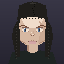
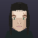

REAL FAMILIES DO NOT COME OUT FOUR OF FOUR
The cold-open family's own faces. Same four people, same generator, nothing else touched.
"DENISE, RAY, MARCO and NINA all have eyes 80,110,150. Real families do not come out four of four." — the row this closes.
BEFORE — measured 100% eye-colour agreement, all six pairs

80,110,150
80,110,150

80,110,150

80,110,150
Every one of the four rolled or copied its way to the identical palette entry. Two bugs stacked: a child's "copy your parent" re-hashed the parent's id from scratch instead of reading what the parent actually wears, and RAY and DENISE — who share no blood — had already landed on the same colour by a plain 1-in-6 coincidence that a fixed, never-re-rolled cast could not escape.
AFTER — 50% agreement, RAY visibly his own man
80,110,150

90,140,90
90,140,90
90,140,90
RAY rolled first and keeps his own colour. DENISE now avoids whatever RAY already wears instead of independently risking the same coincidence again. MARCO and NINA each still take their own coin flip between their two actual parents (not a re-roll of either one) — this time both landed on their mother, which two siblings resembling the same parent is not a bug, it is what siblings do.
WHAT MOVED, MEASURED, NOT EYEBALLED
| claim | before | after |
|---|---|---|
| family eye-colour agreement (6 pairs) | 100.0% | 50.0% |
| stranger baseline, same generator | 17.3% | 17.3% |
| skin agreement | 16.7% | 16.7% |
| hair colour agreement | 16.7% | 16.7% |
Skin and hair colour are untouched on purpose — hair already read each parent's real colour through a different, already-correct path (NPCFactory), and neither was the bug this row named. Family still reads as more alike than four strangers off the street on every trait; eye colour just stopped being the ONE trait a family could never vary on.